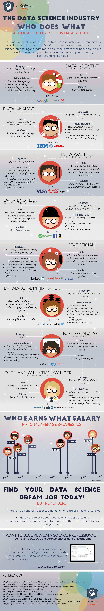
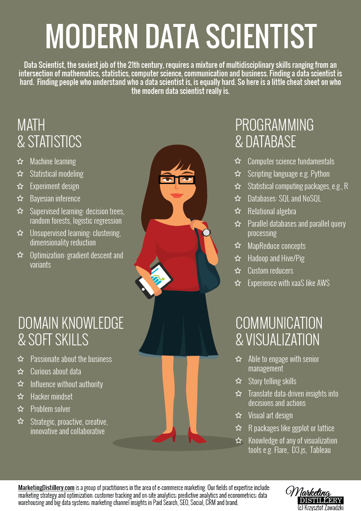
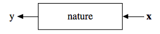
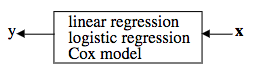

Computing Essentials for Social Scientists: Day One
Jon Atwell & Christopher Skovron
Northwestern University
June 18, 2018
Today
- Introductions
- Program Requirements
- What is data science? What do we hope to get out of this?
- Python vs R
- What you need to know to succeed with data science
Let’s get to know one another
Jon Atwell
- Michigan PhD, 2017 - Sociology
- Studies the emergence of culture and norms
- Expertise: Python, text methods, agent-based modeling, experiments
Chris Skovron
- Michigan PhD, 2017 - Political Science
- Studies public opinion and what people believe about it
- Expertise: R, statistical modeling, causal inference
We expect from you
- Sustained commitment to integrating data science methods in your research
- Be a resource for your colleagues, both students and faculty
- Be flexible, open to struggling and learning new things about yourself and your research
Program requirements
- Three sessions this week
- At least four additional sessions. Intro R and Python count as two sessions.
- Optional but suggested to attend afternoon practice sessions for workshops.
- Participate in future data science programming put on by Data Science Initiative
Program support
- Jon and I will be mentors
- We aren’t here to debug but will help you strategize and find resources
- Research Computing Services is another source of support
What is data science?
- the analysis of data ¯\(ツ)/¯
Etymology
- Naur, “Datalogy” (1974)
- Was proposed that statistics rename itself to DS (1997)
- Today’s use comes via computer science (Classification Society conf. 1996)
What does it mean in practice today?
Everything and Nothing, IOHO
What do LIDAR and Tweets have in common?
- Only data scientists!
Ok, sophisticated processing and analysis algorithms too
Ok, what does it mean in the academy?
- New data sources and types
- Non-regression-based quantitative empirical analytical approaches.
Why are we here?
Business got more serious about analytics
Related concepts and disciplines
- Information Sciences
- “Big data”
- Machine learning
- Computational Social Science
Northwestern Data Science Initiative definition
- New analytic methods
- New sources
- Defined relative to what has historically been typical in disciplines
New data sources
- Text, tweets
- Experiments conducted online, in the field at scale
- More technical data used to analyze social behavior: satellite lights
New methods
- A plethora of new text methods
- Machine learning methods
- Fine-grained measurement (geolocations, etc)
New scales
- Surveys are bigger and more frequent
- People leave more traces of themselves online
- We can observe social behavior using new technologies
Beware the hype
- People have incentives to play up how fancy their data and methods are
- Important to keep a critical eye to whether people are being honest about why they use the data they do and the method they do
- Don’t become a data science supremacist
- OLS is often just as good and orders of magnitude simpler than fancy methods!
- It’s important to have a good bullshit detector when working in this area
Pitfalls for inference
- As social scientists, we need to remember that using new data science tools doesn’t remove or obligations to do good research design
- Bigger data or more computationally intensive approaches also present new challenges for transparency
- Just because you have the full population doesn’t mean you can speak to causality, etc
- Big data doesn’t always mean your findings are generalizable
Why CESS?
CESS students were chosen because
- You already show creativity and promise in your research projects and ideas
- Many of these projects could benefit from data science approaches
- You don’t already know all the things we are going to teach
Much of what we are working on in CESS is not really taught anywhere in the social sciences
- We focus on statistics in methods classes, which is great
- But doing that at the scale required for data science requires organization and an understanding of how computing works
- Most of us in social science don’t have extensive programming experience
- This is tacit knowledge Chris and Jon learned the hard way. We want to help you make it through this thicket faster than we did
Principles for being successful in applying data science to social science
- Get organized
- Know the landscape of available tools and resources
- Know what you need to know
- Understand how to teach yourself
Working together is a key
- CESS is a community of students facing similar challenges and opportunities
- Working collaboratively on programming requires some vulnerability, but community is essential
- You should work on getting comfortable with asking peers for help
- You should share what you know and tricks you pick up with peers and with faculty
Python vs R
Where do you fit in DS?
or, What you need (and don’t need) to know to thrive using computational tools
or or, Relax and focus on what you need
Part 1: The professional angle

{kind=link}

{kind=link}

Academic research or industry?
- You aren’t effectively preparing for the latter here
- Transition is getting harder
- Both can be great, or terrible
Part 2: The tools angle
Machine Learning
- Breiman, 2001: “Two Cultures”
What generates data?

The problem of statistical inference

Statistics 
Machine Learning
Supervised vs. Unsupervised
- Supervised => You know values of dependent variable(s)
- Unsupervised => You don’t
Specified model vs blackbox
- Orthogonal to supervised vs. unsupervised
Supervised
- High predictive power
- more diversity of generating mechanisms the reg.
- easily overfitted
- can be blackbox
Unsupervised
- Lack groundtruth
- define probablistic model/generative process
- harder to overfit
- can be blackbox
Do you need supervised models?
- Regression models, of course!
- Classification? umm, probably not
- Yet, lots of hype here
Do you need unsupervised models?
- text as data!
- clustering, yes
- but not that new
Part 3: The good (academic) programmer angle
No one knows it all, so relax
- Be comfortable in that
- But don’t stop learning!
Wrong emphasis: Efficiency
Why? (more on Day 2)
- clocktime vs human scale
- but complexity matters.
Wrong emphasis: Succinctness
- Compactness often isn’t good
- (See the translation process)
Correct emphasis: Scientific question
- lead with questions, not methods
Correct emphasis: Reproducibility
- organized so others can reproduce result
- but working code not the same as. ..
Correct emphasis: Replicability
- logic of code is clear
- via comments and other documentation
- via properly expressive code